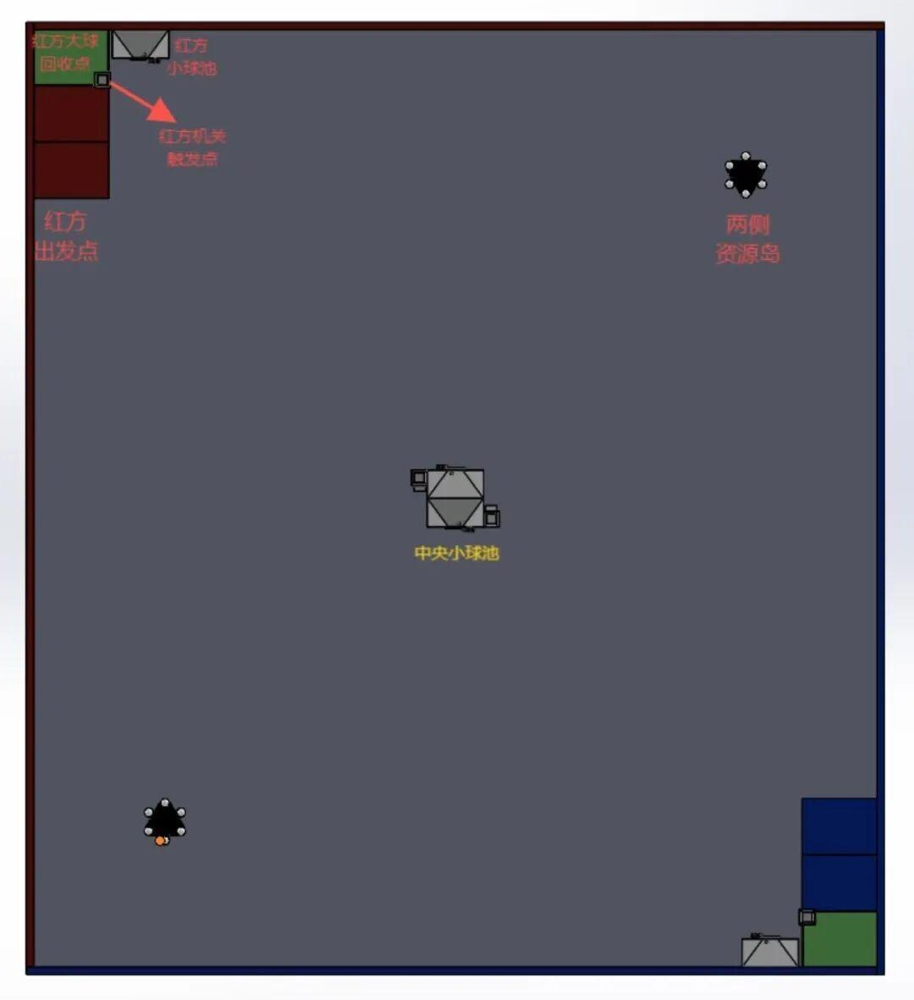
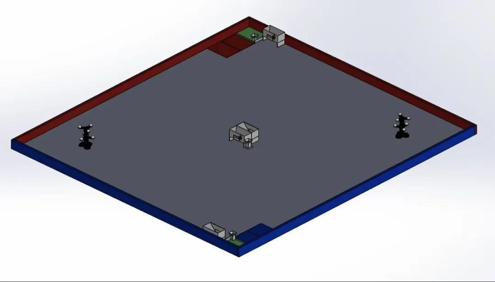

从蓝图到现实|机器人比赛场地的搭建之旅
随着第一届沈阳理工大学机器人大赛暨第十届MineralMaster机器人大赛的到来，Ambition战队成员开始进行了比赛场地搭建的工作。接下来，跟着小编一起探索搭建过程吧。
一、规划蓝图：智慧的勾勒

趣味赛场地俯视图

趣味赛场地侧视图
首先，战队成员绘制出了比赛场地的框架图。用不同颜色线条标注出各个区域，如双方备战区、战斗区、补给区等。
总场地是一个5000mm*4500mm 的矩形场地，场地主要包含基地（17mm球）、出发区、两侧资源岛（42mm球）、中央资源岛（17mm 球）、机关触发区。全文描述的场地道具尺寸误差均在5%以内。
二、基础搭建：稳固的根基


然后，12月3日晚，战队成员开始了比赛场地的基础搭建，形成了场地的基本结构。
三、装饰与完善：细节的雕琢

最后，队员们开始对比赛场地进行装饰，完善了各个区域，使小车能够在场地平稳运行。
四、完工亮相：梦想的舞台
这里，是科技与激情的绚烂碰撞，是智慧与勇气的巅峰较量。机器人比赛场地仿若一方未来战场,金属的碰撞声在此奏响激昂乐章，代码的指令会编织出梦想的绮丽画卷，荣耀的帷幕在这里盛大揭幕。各队伍队长携团队奔赴而来，共赴了这场热血沸腾的科技对决，镌刻了属于他们的传奇！
END
推文|关善启
图片|Ambition战队运营组
审核|青唐三月